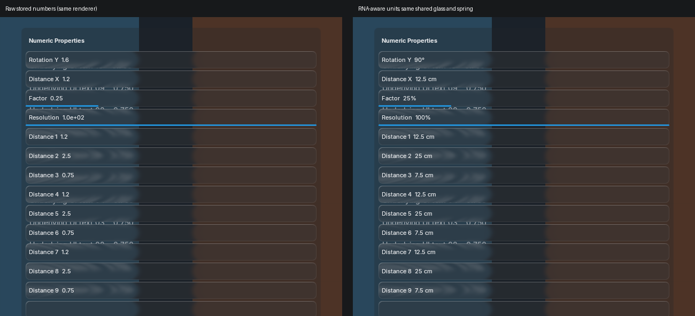
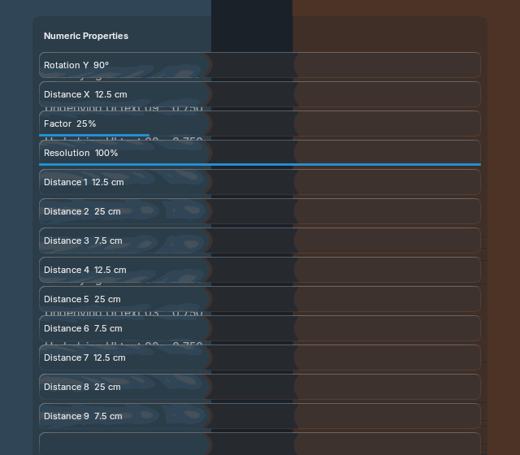
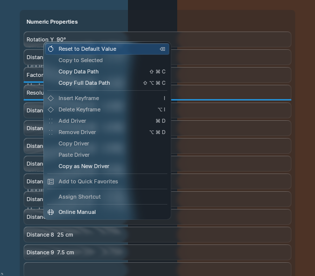
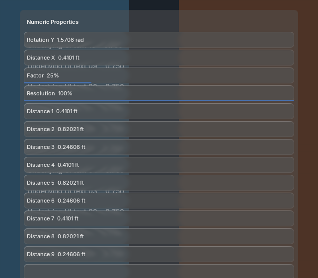

Actual Blender 5.2.2 Metal renders. This extends the existing control painter and BVT shared glass, spring and theme roles. No generated-reference or motion acceptance is claimed.

The baseline disables only numeric formatting in the same renderer; it is not a historical binary or a generated reference. RNA values stay unchanged. Angle, length, percentage, and preferred-unit presentation update without rebuilding layout or glass.

Hover, press, drag and release use the existing source motion. Settled and animation-disabled pixels equal the resting frame. One backdrop, one strong-blur production and five retained offscreens serve all frames.

Click to type; Enter confirms. Safe unit arithmetic, Shift precision, Ctrl snapping, soft drag limits and hard text limits share the original RNA binding. Right-click cancels edits first, then targets the exact property/component. Unit-setting changes during an edit reject stale interpretation.

The active Blender theme and imperial/radians settings are read at runtime. Bound values are not rewritten. Full theme/DPI/platform and generated-reference qualification remain separate.
Rendering/resources/timing/source hashes · Blender 5.1.2 cases · Blender 5.2.2 cases · Official API implementation sources · Integration and remaining prop gaps